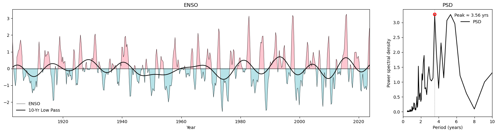
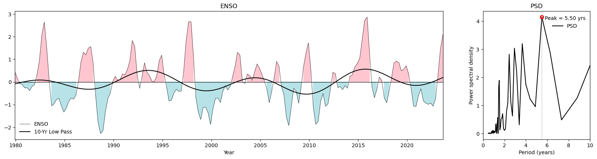

ENSO
El Niño–Southern Oscillation
Analyze the influence of ENSO on global hydroclimate variability.
ENSO Index & Power Spectrum (Long Term: 1903–2023)

ENSO Index and PSD (Long-Term)
ENSO Index & Power Spectrum (Short Term: 1980–2023)

ENSO Index and PSD (Short-Term)